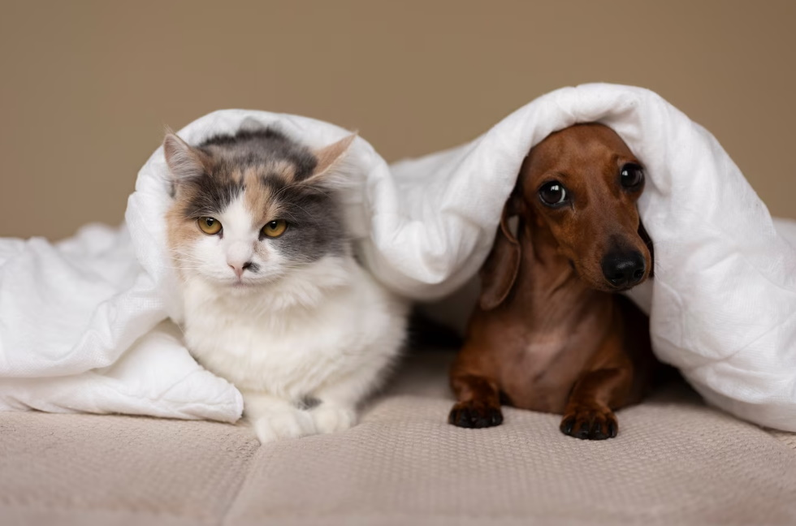

Как отличить
Многие уверены, что смогут легко отличить породистого котенка от беспородного, однако, например, фелинологические организации признают чистокровными только кошек с родословной. Если кот — вылитый бенгал, но у него нет соответствующих документов, то его назовут “домусом”.
Иногда беспородные котята внешне почти полностью копируют породистых собратьев. Например, белых пушистых котят многие принимают за представителей ангорской породы. А иногда, напротив, щенок с родословной может соответствовать стандартам не на 100%, и тогда его сочтут за “дворянина”. То есть отличить породистое и беспородное животное по внешности не всегда представляется возможным.
То касается навыков домашней жизни, то и породистый котенок, и беспородный рождаются с одинаковыми представлениями о лотке. Поэтому мнение о том, что породистое животное больше приспособлено к домашней жизни — это миф.
Сравнение
Внешность:
-
Выбирая породистого щенка или котенка, хозяин может быть уверен в том, какого размера вырастет собака или насколько пушистым будет котенок. Для беспородного питомца это всегда лотерея, если речь не идет об уже взрослом животном. Зато именно дворняга имеет уникальную внешность.
-
Некоторые хозяева не способны отличить своего шпица от соседского, в то время как двух одинаковых дворняжек найти очень сложно.
-
Характер:
-
На протяжении нескольких поколений у породистого животного культивируются определенные качества характера, особи с несоответствующими свойствами исключаются из разведения, а потому характер породистого животного почти всегда предсказуем.
-
С дворнягой сложнее, но зато в ней заложено большое разнообразие характеров, а потому в приюте всегда можно найти собаку, которая будет соответствовать ожиданиям семьи. Кроме того, занятия с кинологом еще никто не отменял.
-
Здоровье:
-
Чистокровных животных выводят таким образом, чтобы все слабые особи отсекались, а это значит, что истинное породистое животное обладает здоровьем, соответствующим своей породе, то есть максимально сильным для своего рода. Тем не менее селекция не всегда оказывается продуманной, к тому же генофонд ограничен, поэтому многие породы приобрели наследственные заболевания. Так, шарпеи вечно страдают болезнями глаз, а лабрадоры — заболеваниями суставов.

-
Беспородные животные в этом плане обладают более крепким иммунитетом, так как прошли естественный отбор и не имеют наследственных заболеваний. Они меньше подвергаются инфекциям и легче переносят различные недуги. Однако нередко у беспородных собак и кошек до конца жизни остается отголосок уличного существования. Так, на улице кошка могла попасть под машину, и тогда до конца жизни она может остаться хромой.
-
Выносливость:
-
Если речь идет о конкретном качестве породы, то здесь чистокровным животным нет равных. Например, алабай — выносливый охранник, а аляскинский маламут — незаменимый перевозчик тяжелого груза. Но, попадая в естественную среду, беспородное животное чувствует себя более уверенным и приспособленным к уличным условиям, поэтому у него меньше риск замерзнуть на улице зимой или остаться голодным.
-
Как выбирать
Если с происхождением будущего друга хозяин определился, то ему могут пригодиться следующие рекомендации по выбору щенка или котенка:
Если выбор пал на породу, то обратитесь в ближайший кинологический породный клуб, специалисты которого помогут подобрать чистокровное животное и, возможно, предложат порядочного заводчика, а не разведенца.
Перед покупкой познакомьтесь с животным и изучите условия его содержания. Посмотрите на мать-собаку. Возможно, она сильно истощена и содержится в антисанитарных условиях, а это значит, что у ее малыша могут быть проблемы со здоровьем.
Не берите котенка, которому меньше 3 месяцев, и щенка младше 2,5 месяцев, так как малыши все это время должны оставаться с матерью, чтобы получить пассивный иммунитет. Это поможет им окрепнуть и подготовиться к курсу вакцинации. Не стесняйтесь спрашивать у продавца документальное подтверждение здоровья питомца и его родственников.
Убедитесь, что мать и отец щенка не обладают агрессией и трусостью, так как эти качества передаются по наследству. Выбирайте малыша, который не боится забраться к незнакомцу на руки.
Не выбирайте породистое животное по объявлениям на бесплатных сайтах. Покупайте у проверенного заводчика.
Если щенок или котенок берутся из приюта, запросите у волонтеров карту его болезни и ветеринарный паспорт, чтобы с первого дня следить за состоянием здоровья собаки или кошки.